This document takes you through the basics of using NetBeans IDE to develop
web applications that make use of the Struts framework. The Struts framework enables you to create
maintainable, extensible, and flexible web applications based on standard technologies, such as JSP pages, resource bundles,
and XML.
Struts works with a Model, View, Controller (MVC) framework, but only provides
the controller—a servlet, which is included in the Struts libraries that the IDE provides and
automatically registers in the web.xml deployment
descriptor when you indicate that you want to use Struts. The Struts servlet uses the struts-config.xml
file to map incoming requests to a Struts "action" class. An action
class receives a Struts "actionform bean" class as input, which serves
as a transfer object between the action class and the view, which is
typically a JavaServer Pages (JSP) page. Because many web applications
use JSP pages for the view, Struts provides custom tag libraries which
facilitate interaction with HTML forms.
This document is designed to get you going as quickly as possible. The following topics are covered:
At the end of this tutorial, you will have a very simple
semi-functioning login page. You will have learnt several basic
features provided by Struts and you will also have learnt how these
features are implemented via the IDE. Specifically, you will use Struts
tags in a JSP page, validate a field using a Struts actionform bean
class, and navigate between pages using a Struts action class. You will
also be shown how to add various ancillary Struts functionalities, such
as "Cancel" and "Logout".
For specific information on how Struts works, see How does it work? on
the Struts website. For
general information on working with the IDE, see the Support
and Docs page on the NetBeans website.
Setting Up a Struts Application
Before you start writing code, you have to make sure you have all of the necessary software
and that your project is set up correctly.
Installing the Software
Before you begin, you need to install the following software on your
computer:
Java Standard Development Kit (JDK™) version
1.4.2 (download)
or 5.0 (download)
Optionally, you can download and use the Sun Java System (SJS)
Application Server Platform Edition, JBoss, or WebLogic. However, the
Tomcat Web Server that is bundled with the IDE provides all the support
you need for two-tier web applications such as the one described in
this quick start guide. An application server (such as the SJS
Application Server, JBoss, or WebLogic) is only required when you want
to develop enterprise applications.
Creating a New Struts Application
In the IDE, a "Struts application" is nothing more than a normal web application accompanied by the Struts libraries
and configuration files. You create a Struts application in the same way as you create any other web application in the IDE,
with the additional step of indicating that you want the Struts libraries and configuration files to be included
in your application.
Choose File > New Project. Under Categories, select Web.
Under Projects, select Web Application and click Next.
In the Name and Location panel, do the following:
Under Project Name, enter LoginPage.
Change the
Project Location to any directory on your computer. From now
on, this directory is referred to as $PROJECTHOME.
Select the recommendations to which your source structure will adhere, which is purely a personal preference:
Select the server to which you want to deploy your application. Only
servers that are registered with the IDE are listed. (To register a server, go to Tools > Server Manager.)
Notice
that the Context Path is /LoginPage.
Click Next.
In the Frameworks panel, select Struts 1.2.7 (if you are using NetBeans IDE 5.5., the
supported Struts version is 1.2.9):
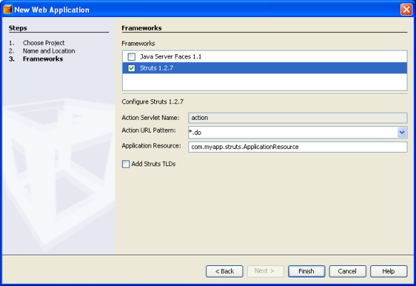
Do not change any of the values in the
lower section of this panel. They serve the following purposes:
Action Servlet Name. Hardcoded specification of the name of the servlet entry for the Struts action servlet.
The web.xml deployment descriptor contains a servlet entry for the action
servlet, specifying the appropriate Struts specific parameters, such as the name
of the servlet class and the path to the struts-config.xml configuration file.
Action URL Pattern. Allows the appropriate patterns which should be mapped
to the Struts action controller to be specified. This generates a corresponding web.xml
servlet mapping entry to map the specified URI pattern to the action servlet. By default, only the *.do
pattern is mapped.
Application Resource. Lets you specify the resource bundle which will be used
in the struts-config.xml file for localizing messages. By default, this is com.myapp.struts.ApplicationResource.
Add Struts TLDs. Lets you generate tag library descriptors for the Struts tag libraries.
A tag library descriptor is an XML document which contains additional information about
the entire tag library as well as each individual tag. In general, this is not necessary, because
you can refer to on-line URIs rather than local TLD files.
Click Finish.
The IDE creates the $PROJECTHOME/LoginPage
project folder in your filesystem. As with any web application in the IDE, the project folder
contains all of your sources and the IDE's project metadata, such as the Ant build script.
However, in addition, your web application has all of the Struts libraries on its classpath. Not only
are they on the application's classpath, but they are included in the project and will be
packaged with it when you build it later in this quick start guide.
The LoginPage project
opens in the IDE. You can view its logical structure in the Projects window and its
file structure in the Files window. For example, the Projects window should now look as follows:
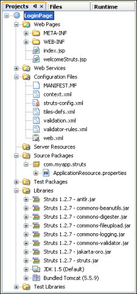
In the Configuration Files node, the application includes all the
Struts-specific configuration files, of which struts-config.xml
is the most important. You will use this configuration file throughout
this quick start guide. Also in the Configuration Files node, to handle
Struts processing, the Struts servlet (i.e., the controller in the MVC
paradigm) is mapped in the web.xml deployment
descriptor:
Above, the Struts servlet (org.apache.struts.action.ActionServlet) is specified as the servlet that will control all requests for
the mapping .do. In addition, the web.xml file specifies that the Struts servlet is configured by means of the
struts-config.xml file that is found in the WEB-INF folder.
Developing a Struts Application
Developing a Struts application is similar to developing any other
kind of web application in the IDE. You use components such as JSP
pages, servlets, listeners, and filters. However, you complement your
web development toolkit by using the facilities provided by Struts via
the IDE. For example, you use templates in the IDE to create Struts
action classes and Struts actionform bean classes. On top of that, the
IDE automatically registers these classes in the struts-config.xml file and lets you extend this file very easily
via menu items in the Source Editor's pop-up menu.
Using Struts Custom Tag Libraries in a JSP Page
Many web applications use JavaServer Pages (JSP) for the view in the MVC paradigm, so Struts provides custom
tag libraries which facilitate interaction with HTML forms. These can very easily and smoothly
be set up and used in a JSP page in the IDE.
Right-click the LoginPage project node, choose New > JSP,
and call the new JSP page loginForm. Click Finish.
In the Source Editor, change the default content of the <H1> tag to Login Form
and do the same for the text in the <TITLE> tags.
Copy these first two taglib directives from the welcomeStruts.jsp file to the top
of your new loginForm.jsp file:
Notice that when you type the Struts tags, the IDE helps you
by suggesting different ways of completing the code that you're typing, and further helps you by providing Struts Javadoc:
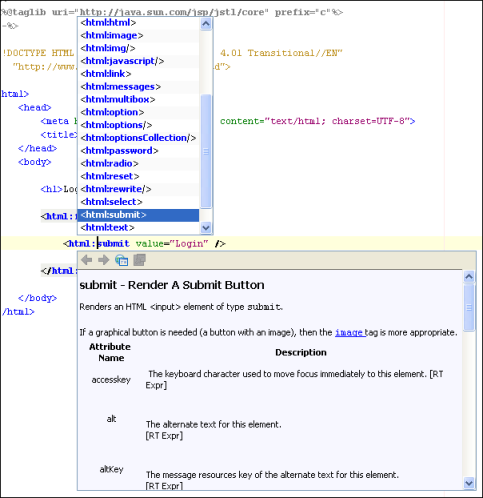
Whenever you finish typing in the Source Editor, you can neaten the code by right-clicking in the
Source Editor and choosing Reformat Code:
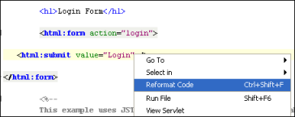
In the Component Palette on the right side of the Source Editor, within the HTML section,
drag the Table item to just above the <html:submit value="Login" />
line. The Insert Table dialog box pops up. Set both the Rows
and Columns to 1, so that you'll create a table consisting
of one row and one column. Click OK.
In the Projects window, expand the Source Packages node, expand the com.myapp.struts node,
and double-click the ApplicationResource.properties file so that it opens in the Source Editor.
Add login.name as a key, anywhere in the ApplicationResource.properties file, and add a meaningful message. For example:
login.name=Name
Using Struts to Validate a Field in a JSP Page
A Struts "actionform bean" class represents data shared between the view (in this case, a JSP page) and the Struts action class.
An actionform bean class is available both for populating the view and for providing input to an action class.
An actioform bean class also has a validate method to allow input mapped from the view to be verified.
Right-click the LoginPage project node and choose New > File/Folder.
In the Web category choose Struts ActionForm Bean and click Next. Notice that your actionform bean class
will be called "NewStrutsActionForm". Leave the default name for purposes of this tutorial. In a real
application, you would give your actionform bean class a new, meaningful name. Select com.myapp.struts
in the Package drop-down list and click Finish.
The actionform bean class opens in the Source Editor. By default, the IDE provides it with
a String called name and an int called number. Both
fields also have getters and setters defined for them.
Open struts-config.xml in the Source Editor and note that it contains, among other things, the following:
Hold down the Ctrl key and move your mouse over the actionform bean class's fully qualified class name:
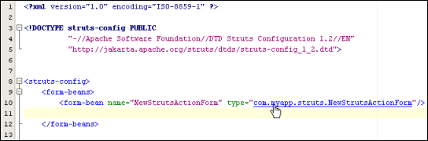
A hyperlink appears. Click it to navigate to the actionform bean class.
Now browse through the actionform bean class in the Source Editor.
Look at the validate method that the IDE created for you:
public ActionErrors validate(ActionMapping mapping, HttpServletRequest request) {
ActionErrors errors = new ActionErrors();
if (getName() == null || getName().length() < 1) {
errors.add("name", new ActionMessage("error.name.required"));
// TODO: add 'error.name.required' key to your resources
}
return errors;
}
Notice that the field called name
is validated by default. If validation fails, which happens when no
name is entered in the JSP page, a message that is identified by error.name.required is returned.
Following the TODO instruction that the IDE put in the validate method for you, add
error.name.required as a key to the ApplicationResource.properties file and add a meaningful message. For example:
error.name.required=Enter a name!
At the top of the file, to customize the formatting of your error message,
change the first four keys to the following:
Specify where you want
the error message to be rendered, by adding
the following line in loginForm.jsp, right above the closing </html:form> tag:
<html:errors />
Using Struts to Navigate between JSP Pages
A Struts "action" class is executed in response to a user request and commonly interacts
with the model through a business delegate. The responsibility of an action class is to provide navigation and forward
control to the appropriate view.
Right-click the LoginPage project node and choose New > File/Folder.
In the Web category choose Struts Action and click Next.
In the Name and Location panel, notice that your action class
will be called "NewStrutsAction". Leave the default name for purposes of this tutorial. In a real
application, you would give your action class a new, meaningful name.
Select com.myapp.struts in the Package drop-down list.
Type login
in Action Path (the content of Action Path is therefore now /login).
Click Next.
In ActionForm Bean, Parameter, notice that the IDE suggests that you associate the action class
with the actionform bean class that you created in the previous step. In Input
Resource, browse to your loginForm.jsp page. Click Finish.
Open struts-config.xml in the Source Editor and note that it contains, among other things, the following:
Notice the definition of SUCCESS, at the top of the NewStrutsAction:
private final static String SUCCESS = "success";
The SUCCESS String declaration specifies that this action class
forwards to the output view called success.
You need to define a page that will be displayed
when the output view above is called.
So, create another JSP in the same location as loginForm.jsp and call it loginSuccessful.
In the Source Editor, change the default content of the <H1> tags in the new JSP
files to Login Successful! and do the same for the text in the <TITLE> tags.
Open struts-config.xml in the Source Editor, right-click anywhere in the /login action mapping,
and choose Struts > Add Forward:
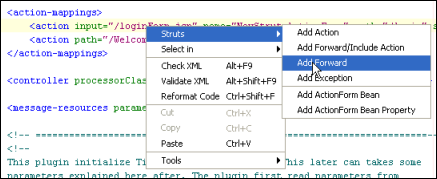
The Add Forward dialog box opens.
Type success in Forward Name. Browse to loginSuccessful.jsp
in Resource File. The dialog box should now look as follows:
Click Add.
Notice that struts-config.xml
now shows the following (the new code is in bold):
The IDE uses an Ant build script to build and run your web application.
The IDE generated the build script when you created the application, basing it on the options
you entered in the New Project wizard and the project's Project Properties dialog box.
Right-click the LoginPage project node and choose Properties.
In the Project Properties dialog box, click the Run node. In Relative URL, type login.do. Click OK.
Note: Remember
that at the start of this quick start guide, you mapped the .do mapping to the Struts controller servlet. Now, when you
run the application and the .do mapping is used, the Struts controller servlet knows that it has to handle the request.
Choose Run > Run Main Project (F6) from
the Run menu.
The IDE builds the web application and deploys it, using the server you specified when creating the project.
The browser opens and displays the loginForm.jsp page:
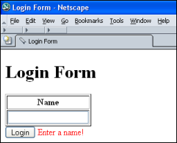
Only if field-level validation succeeds, so that the action class's execute method returns the SUCCESS
output view, does Struts
call the loginsuccesful.jsp page. To pass validation, all that you need to do is add any value
to the Name row in the loginForm.jsp page. Then, loginSuccessful.jsp is displayed:
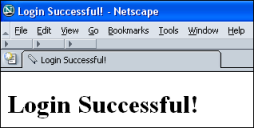
Of course, as pointed out at the start of this quick start
guide, this is not a complete login form; it merely shows you what the
basis of such a form could look like in Struts. The following section
shows you how quickly and easily the login form can be extended with a
variety of standard functionality.
Adding More Functionality to the Struts Application
Struts simplifies and organizes an application in many more ways than can be listed here. However, here
are some simple extensions to your existing login page, using Struts.
Using Struts to Add "Cancel" Functionality
In loginForm.jsp, below the <html:submit> line, create the Cancel button
by adding the following:
<html:cancel />
Add these lines to the execute method in org.myapp.struts.NewStrutsAction:
if (isCancelled(request)){
return mapping.findForward(CANCEL);
}
Press Ctrl-Space within the isCancelled method and then read the Javadoc to understand the method:
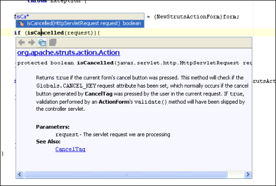
Declare the definition of CANCEL at the top of the NewStrutsAction class, right below the definition
of SUCCESS:
private final static String CANCEL = "cancel";
You need to define a page that will be displayed
when CANCEL is called.
So, create another JSP in the same location as loginForm.jsp and call it loginCancel.
In the Source Editor, change the default content of the <H1> tags in the new JSP
files to Login Cancelled! and do the same for the text in the <TITLE> tags.
Open struts-config.xml in the Source Editor, right-click anywhere in the /login action mapping,
and choose Struts > Add Forward. The Add Forward dialog box opens.
Type cancel in Forward Name. Browse to loginCancel.jsp
in Resource File. The dialog box should now look as follows:
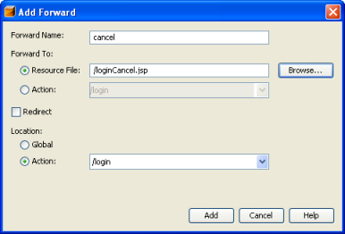
Click Add.
Notice that struts-config.xml
now shows the following (the new code is in bold):
Note: In Struts 1.2.9 and 1.3, note the changes for cancellation, as described here.
Run the application again and notice the new Cancel button:
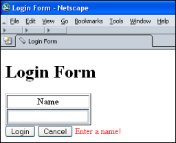
Click it and notice that the new
loginCancel.jsp page is opened in the browser.
Using Struts to Add "Logout" Functionality
In loginForm.jsp, below the <H1> tags, create the Logout link by adding the following:
<html:link action="/logout">Logout</html:link>
You need to define a page that will be displayed
when the Logout link is clicked.
So, create another JSP in the same location as loginForm.jsp and call it loginOut.
In the Source Editor, change the default content of the <H1> tags in the new JSP
files to Have a Nice Day! and do the same for the text in the <TITLE> tags.
Open struts-config.xml in the Source Editor, right-click anywhere,
and choose Struts > Add Forward/Include Action. The Add Forward/Include Action dialog box opens.
Type logout in Action Path. Browse to loginOut.jsp
in Resource File. The dialog box should now look as follows:
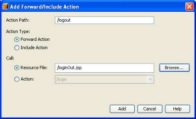
Click Add.
Notice that struts-config.xml
now shows the following (the new code is in bold):
Run the application again and notice the new Logout link:
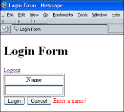
Click it and notice that the new
loginOut.jsp page is opened in the browser.
Using Struts to Add "Reset" Functionality
In loginForm.jsp, between the Submit and Cancel buttons, create the Reset button by adding the following:
<html:reset />
Run the application again and notice the new Reset button:
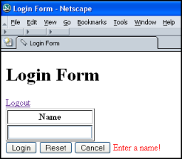
Type something in the Name row, click Reset, and notice that Struts empties the table.
Adding Your Favorite Struts Features to the IDE
When using Struts, you are not limited to the functionality provided by the IDE. You can enhance the IDE
by adding features that the IDE does not support. Here are some examples:
You can add Struts-specific HTML snippets to the Component Palette. For example, you can add
the HTML code that you used to create the Submit, Reset, and Cancel buttons as snippets to the HTML palette.
Then, you can drag the snippets from the palette and drop them in the Source Editor. You can create a NetBeans plug-in module
that contains the snippets, and then share them with your colleagues. To do so, see the NetBeans Code Snippet Module Tutorial.
Instead of adding your Struts snippets to an existing palette, you can create a completely new palette, specifically for
the struts-config.xml file. Again, you can share the result with your colleagues, in the form of a plug-in module. To do so, see the NetBeans Component Palette Module Tutorial.
You
can extend the JSP editor, to provide features specifically for use
with the Struts framework. As with the above two suggestions, sharing
such features with colleagues is easy, once you provide a plug-in
module for them. For details, see the NetBeans Editor Extension Module Tutorial.
You
can create samples of Struts applications and make them available via
plug-in modules. This way, you can share your knowledge with others,
who can then access your samples from the New Project wizard, in the
same way as any other NetBeans project sample is accessed. For details,
see the NetBeans Project Sample Module Tutorial.
To send comments and suggestions, get support, and keep informed on the latest
developments on the NetBeans IDE J2EE development features, join thenbj2ee@netbeans.org
mailing list. For more information about upcoming J2EE development features in NetBeans IDE, see j2ee.netbeans.org
.